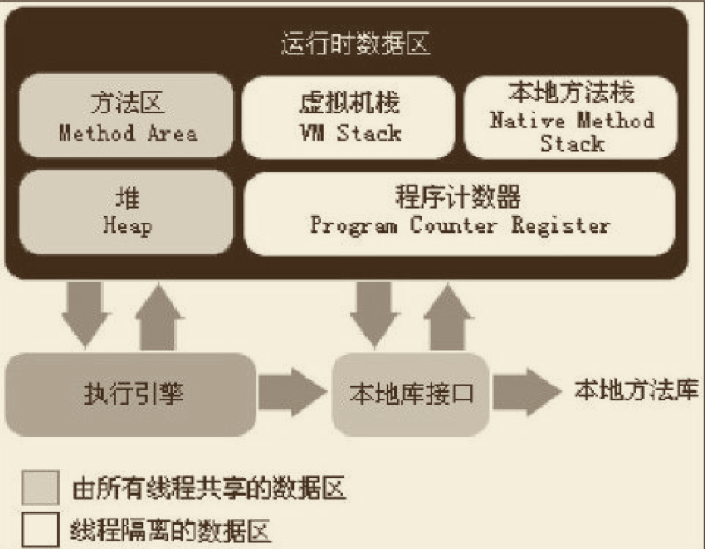

java虚拟机知识
java内存模型
 如果线程请求的栈深度大于虚拟机所允许 的深度，将抛出StackOverflowError异常；如果虚拟机栈可以动态扩展（当前大部分的Java虚拟机都可动 态扩展，只不过Java虚拟机规范中也允许固定长度的虚拟机栈），如果扩展时无法申请到足够的内存， 就会抛出OutOfMemoryError异常。
程序计数器
一块较小的内存空间，它可以看作是当前线程所执行的字节码的行号指示器,字节码解释器工作时就是通过改变这个计数器的值来选取下一条需要执行的字节码指令，分 支、循环、跳转、异常处理、线程恢复等基础功能都需要依赖这个计数器来完成,没有oom溢出
Java虚拟机栈
线程私有的，它的生命周期与 线程相同。虚拟机栈描述的是Java方法执行的内存模型：每个方法在执行的同时都会创建一个栈帧 （Stack Frame [1] ）用于存储局部变量表、操作数栈、动态链接、方法出口等信息
本地方法栈
本地方法栈则为虚拟机使用到的Native方法服务，本地方法栈区域也会抛出StackOverflowError和OutOfMemoryError异常
java堆
分为新生代,老年代和永久代，新生代再细分Eden，From survivor，To Survivor
方法区
方法区（Method Area）与Java堆一样，是各个线程共享的内存区域，它用于存储已被虚拟机加载的 类信息、常量、静态变量、即时编译器编译后的代码等数据。
java的内存溢出类型
堆内存溢出 虚拟机栈内存和本地方法栈溢出 方法区和常量池溢出 本机直接内存溢出（堆外内存）
jvm垃圾回收器
- Serial收集器，新生代收集器，只会使用一个CPU或一条收集线程去完成垃圾收集工作，更重要的是在它进行垃圾收集时，必须 暂停其他所有的工作线程，直到它收集结束
- ParNew收集器，新生代收集器，其实就是Serial收集器的多线程版本,
- Parallel Scavenge,新生代收集器,收集器的目标则是达到一个可控制的吞吐量
- Serial Old是Serial收集器的老年代版本，是一个单线程收集器，使用“标记-整理”算法
- Parallel Old是Parallel Scavenge收集器的老年代版本，使用多线程和“标记-整理”算法
- cms收集器是基于“标记—清除”算法实现的
- G1，分代收集，G1从整体来看是基于“标记—整理”算法实现的收集 器，从局部（两个Region之间）上来看是基于“复制”算法实现的*
jvm垃圾回收分类
- m
jvm垃圾回收算法
- 复制算法，效率高，但是空间利用不足
- 标记整理，不会产生空间碎片
- 标记清除，产生大量空间碎片，不利于大对象的内存分配
jvm如何判断对象引用
- 根据引用计数
- 根据GCRoot链，查找引用
jvm参数
-Xms 堆内存最小值 -Xmx 堆内存最大值 -Xmn -Xss 线程内存 -XX:PermSize 永久代内存 -XX:MaxPermSize 永久代内存 -XX:MaxDirectMemorySize 直接内存 -XX:+HeapDumpOnOutOfMemoryError，可以让虚拟机在OOM异常出现之后自动生成dump文件 -XX:+HeapDumpOnCtrlBreak 可以使用[Ctrl]+[Break]键让虚拟机生成dump文件 -XX:+PrintGCTimeStamps 打印GC停顿时间 -XX:+PrintGCDetails 打印GC详细信息 -verbose:gc 打印GC信息，输出内容已被前一个参数包括 -Xloggc:gc.log
-XX:+UseConcMarkSweepGC -XX:+UseParNewGC 要求虚拟机在新生代和老年代分别使用ParNew和CMS收集器进行垃圾回收
-XX:+UseSpinning开启自旋锁 -XX:PreBlockSpin自旋锁自旋的次数
jvm类加载机制
jvm线上问题分析工具
jdk自带的工具
- jps 可以列出正在运行的虚拟机进程，并显示虚拟机执行主类名称
- jstat 它可以显示本地或者远程 [1] 虚拟机进程中的类装载、内存、垃圾收集、JIT编译等运行数据
- jinfo 实时地查看和调整虚拟机各项参数
- jmap 用于生成堆转储快照
- jhat 与jmap搭配使用，来分析jmap生成的堆转储快 照
- jstack 用于生成虚拟机当前时刻的线程快照,生成线程快照的主 要目的是定位线程出现长时间停顿的原因，如线程间死锁、死循环、请求外部资源导致的长时间等待等 都是导致线程长时间停顿的常见原因
- JConsole 可以对jvm进行内存监控，线程监控
- Visual VM
- 显示虚拟机进程以及进程的配置、环境信息（jps、jinfo）。
- 监视应用程序的CPU、GC、堆、方法区以及线程的信息（jstat、jstack）。
- dump以及分析堆转储快照（jmap、jhat）。
- 方法级的程序运行性能分析，找出被调用最多、运行时间最长的方法。
- 离线程序快照